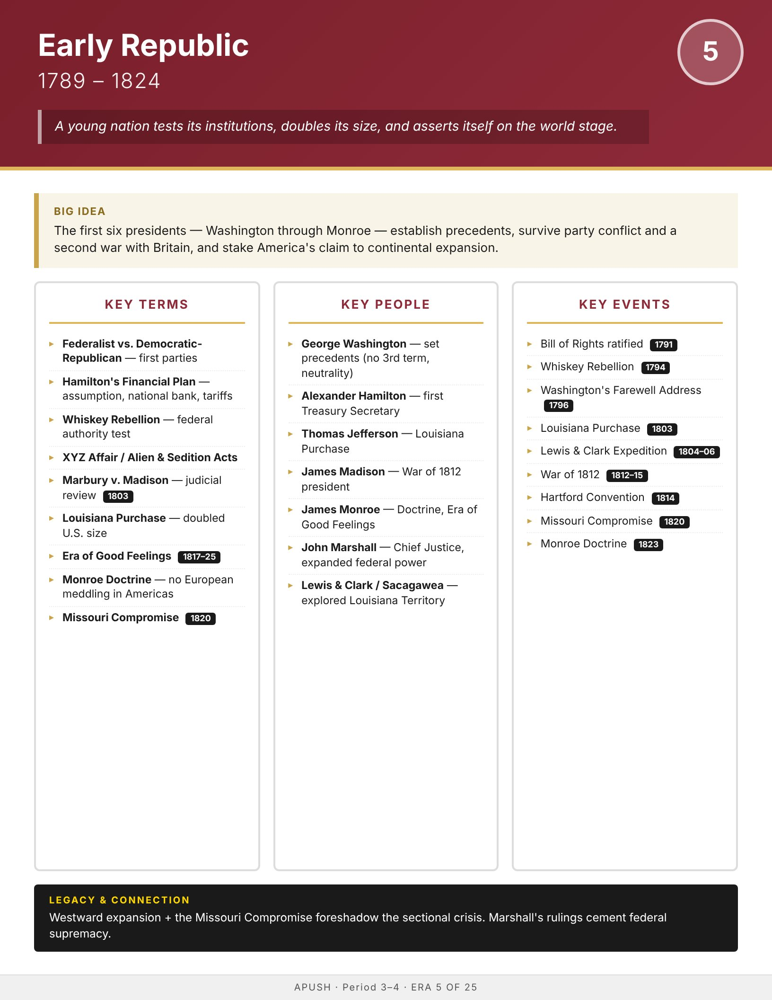

Era
Wise
AP History
AP United States History
Home
Course Sequence
Eras
Exam Prep
DBQ Guides
← Course Sequence
Era 5 of 25 · AP Period 3–4 · Lessons 9–12
Early Republic
1789–1824
Open infographic full size
Print

← ERA 4
Revolutionary Period
ALL ERAS
Eras index
ERA 6 →
Jacksonian Era